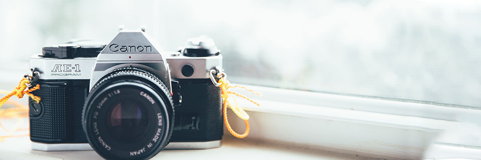
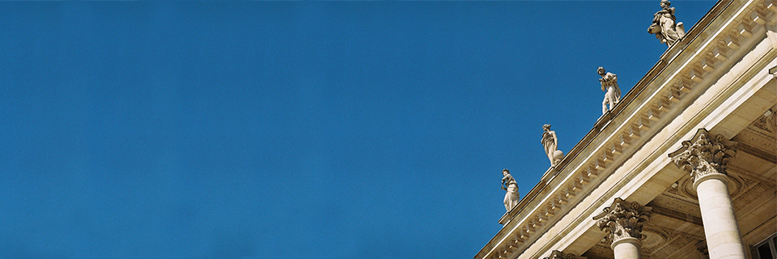

Intro
Salut vous,
Moi c'est Antoine, j'ai enfin franchi le pas de la création d'un site photo, ca vous dirait d'y faire un tour ?
J'y ai classé mes photos, mes créations, mon art (lol), et quelques articles de blog, pour développer sa culture et
sa compréhention de la photo.
J'ai également mit beaucoup de temps et de travail, en solo j'espère qu'il vous plaira
Photographe :

Photographe de passion, autodidacte. Initié très tôt à la photographie et au numérique ce n'est qu'en 2018 que je n'ai réellement commencé à
m'instruire sur la photographie et son traitement.
Plus amateur que professionnel, je suis curieux et avide d'expérience.
Je me lance ainsi dans le grand bain des photographes sur internet en publiant mon site, partageant mes galeries et en proposant une expérience
différente (je l'espère) de celle de consommation d'image.
N'hésitez pas à me laisser un avis, je réponds volontier aux questions ! Je vous propose de faire un tour dans l'onglet
"Galerie" pour un avant goût de mon travail.
Si vous le souhaitez l'onglet suivant vous permet de connaître mon matériel.
A Propos

Ma spécialité :
Je shoot principalement pour le plaisir, mais si je devais dégager un genre, une préférence, ce serait sûrement
la photographie de paysage. Je trouve dans les grands espaces une puissance que je retrouve rarement ailleurs.
Ensuite concernant mon style, je suis fan de l'esprit argentique qui se développe depuis quelques années, ce qui rends mes photos assez
"naturelles", "candides". Cinéphile assumé, mes inspirations sont principalement issues des grandioses films de SF des années 80, 90. Mais également
du format super 8.
j'aime ce que je fais !
J'aime ce que je fais, car la photographie me permet d'être libre dans le processus artistique. Egalement car je suis aventurier dans l'âme la photographie
étant une aventure née dans la rue entre recherche et observation, au-delà de la simple passion la photographie, j'aime cela car elle m'élève à chercher de nouvelles conquêtes.
Voici où me trouver :
Mes disponnibilités :
Disponible sur rendez-vous uniquement.
Un peu de lecture ?
Au fil de ma pratique de la photographie, j'ai pu apprendre quelques truc sympa, si vous êtes plus du côté de la plume que de l'oeil,
n'hésitez pas à faire un tour sur cet onglet
"Blog" pour en savoir plus.
Si vous préférez les résaux sociaux n'hésitez pas à m'y rejoindre !